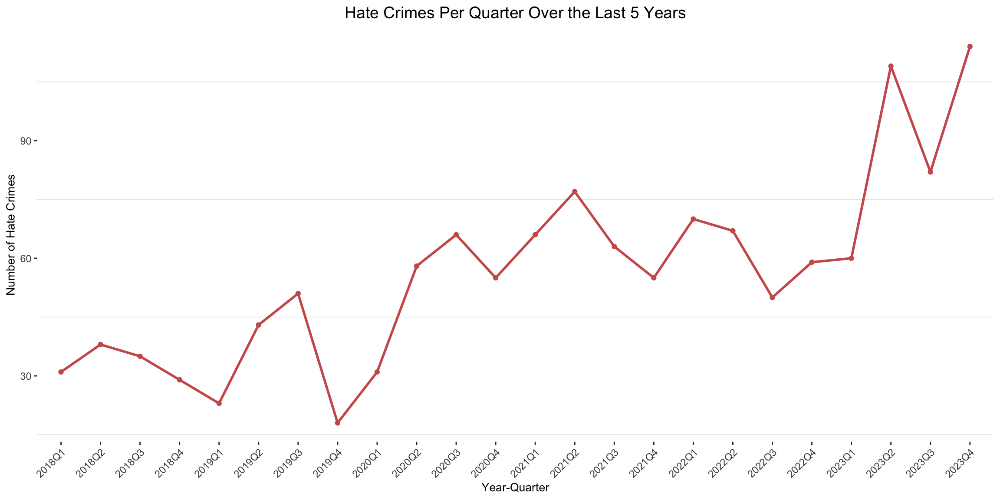

Hate Crimes in Toronto
1 Introduction
2 Data
2.1 Raw Data
The dataset used in this analysis includes all verified hate crime occurrences investigated by the Hate Crime Unit by reported date since 2018. The Hate Crime categories (bias categories) include Age, Mental or Physical Disability, Race, Ethnicity, Language, Religion, Sexual Orientation, Gender, and Other Similar Factors. The dataset is provided at the offence and/or occurrence level, meaning that one occurrence may have multiple bias categories associated with it. The data does not include occurrences deemed unfounded or classified as hate incidents.
The hate crimes in the dataset are categorized according to a clear legal definition:
Hate Crime: A criminal offence committed against a person or property motivated in whole or in part by bias, prejudice, or hate based on race, national or ethnic origin, language, color, religion, sex, age, mental or physical disability, sexual orientation, or gender identity.
Hate Incident: A non-criminal action motivated by hate against an identifiable group, such as using racial slurs.
This data was obtained from Open Data Toronto through the opendatatoronto library (Gelfand 2022) [@gelfand2022] All analysis was conducted in R (R Core Team 2023) [@r2023] using packages such as dplyr (Wickham 2023) and ggplot2 (Wickham 2016)[@wickham2016]. The raw data features occurrences since 2018, providing valuable insight into hate crime trends in Toronto.
We also utilized the Toronto neighborhoods shapefile, which was obtained from Open Data Toronto to map and visualize the geographic distribution of hate crimes across the city. This allowed for a spatial analysis of hate crimes by neighborhood [@opendatatoronto2022].
2.2 Data Cleaning
Upon inspecting the dataset, it became clear that most of the data was already in good condition, as many variables were categorical in nature. To ensure consistency, we checked all the unique values within these categorical columns, such as RACE_BIAS and RELIGION_BIAS, and found no need for further standardization. Each category was consistently labeled, so no changes were necessary in terms of cleaning or formatting these values.
We also searched for missing values and duplicate rows. The dataset had very few missing values, and no duplicate entries were found. The only column that contained missing values was the LOCATION_TYPE, where some entries lacked information about where the hate crime occurred. To simplify the analysis, these missing values were replaced with the label “Unknown” instead of NA.
In addition, the date column OCCURRENCE_DATE and REPORTED_DATE—were originally in character format, so they were converted to proper date formats for convenience during analysis. Time columns, such as OCCURRENCE_TIME and REPORTED_TIME, were also reformatted into a standardized HH format.
Finally, we verified the ARREST_MADE column to ensure it contained only valid values, namely “YES” and “NO”. Any invalid or ambiguous entries were replaced with NA.
These steps ensured that the dataset was clean and ready for further analysis, free of inconsistencies or issues that might have impacted the results.
2.3 Basic Summary Statistics of the Data
The summary table @tbl-summary provides an overview of key variables from the hate crimes dataset, which spans from 2018 to 2023. The majority of incidents were reported in 2023. The most frequent occurrence locations were Streets/Roadways/Highways (287 incidents), with Division D32 handling the highest number of cases (177). A significant proportion of the crimes involved Race Bias, where Black individuals were the most frequently targeted (296 incidents), and Ethnicity Bias, with Chinese individuals being the most affected (40 incidents). Additionally, Religion Bias was notably prevalent against Jewish individuals, accounting for 485 out of 627 cases, while the most common Sexual Orientation Bias targeted 2SLGBTQ+ individuals (101 incidents).
In terms of primary offences, Mischief Under $5000 was the most common offence, appearing in 605 incidents, while arrests were made in 270 cases, representing 20% of the total. Mischief Under $5000 is a criminal offence involving willful damage or destruction of property valued at less than $5000, such as vandalizing a car with spray paint.The dataset also tracks bias categories related to Age, Mental or Physical Disability, and Gender, with the majority of cases lacking a specific bias in these categories. This breakdown provides insight into the nature and distribution of hate crimes in Toronto over the five-year period.
| Column Name | Statistic |
|---|---|
| REPORTED_YEAR | Most Frequent: 2023, Range: 2018–2023 |
| LOCATION_TYPE | Most Frequent: Streets/Roadways/Highway, Count: 287 |
| DIVISION | Most Frequent: D32, Count: 177 |
| OCCURRENCE_YEAR | Most Frequent: 2023, Range: 2018–2023 |
| AGE_BIAS | Total Count: 0 |
| MENTAL_OR_PHYSICAL_DISABILITY | Total Count: 3 |
| RACE_BIAS | Total Count: 428, Most Frequent: “Black”, Count: 296 |
| ETHNICITY_BIAS | Total Count: 168, Most Frequent: “Chinese”, Count: 40 |
| LANGUAGE_BIAS | Total Count: 3, Most Frequent: “Hindi”, “Spanish”, “Tamil”, Count: 1 |
| RELIGION_BIAS | Total Count: 627, Most Frequent: “Jewish”, Count: 485 |
| SEXUAL_ORIENTATION_BIAS | Total Count: 197, Most Frequent: “2SLGBTQ+”, Count: 101 |
| PRIMARY_OFFENCE | Total Count: 605, Most Frequent: “Mischief Under $5000”, Count: 605 |
| GENDER_BIAS | Total Count: 78, Most Frequent: “Woman”, Count: 29 |
| ARREST_MADE | Total Arrest Made: 270 |
2.4 Discussion of Data Selection
Often, media reports on hate crimes in Toronto tend to focus on general trends, such as an increase in anti-Semitic hate crimes by a certain percentage, without offering much depth. While they might mention which group—whether LGBTQ, Muslim, or Black—was most affected by hate crimes, they rarely provide details on the types of incidents involved. For instance, they seldom specify whether these crimes were threats, verbal assaults, vandalism, or physical violence. Similarly, there is often little analysis of the geographic distribution of these crimes, leaving unanswered questions about which neighborhoods are more prone to specific hate crimes.
This dataset was chosen specifically to address these gaps in understanding. It allows for more granular analysis, helping to answer important questions such as: What types of hate crimes are committed against different groups like Muslims, Indian, Black, or Jewish people? Are these crimes more likely to involve threats, physical assaults, or vandalism?
By delving into these more specific and actionable details, this dataset can help communities, law enforcement, and policymakers better understand the nature of hate crimes and more effectively address them. This kind of detailed analysis offers a clearer path to targeted interventions, which could ultimately reduce the prevalence of hate crimes and support victims more effectively
3 Analysis
3.1 Analysing Hate Crime by Victim Group and Bias Type
From the summary statistics, we observed that the most frequent hate crimes in Toronto are motivated by bias related to race, ethnicity, religion, or sexual orientation. \ref{figone} breaks down these categories and reveals the specific groups that are most affected. In terms of race, Black communities are disproportionately targeted, with the highest count of hate crimes. This aligns with numerous studies and reports that highlight systemic racism and the disproportionate criminalization of Black individuals in Canada and elsewhere . Religious bias, particularly antisemitism, remains the most significant in the dataset, with Jewish communities experiencing the highest hate crime rates by far. This trend has been documented consistently in media reports, showing that antisemitic hate crimes have increased in recent years .
Sexual orientation biases predominantly target 2SLGBTQ+ communities, especially gay and lesbian individuals, echoing findings from studies on homophobia and transphobia in urban areas . Interestingly, ethnic bias reflects a significant proportion of crimes against Chinese and Indian communities, which may correlate with a rise in xenophobic incidents, particularly during the COVID-19 pandemic when East Asian communities became frequent targets of hate.
3.2 Investigating the most frequent Primary offences towards victim groups
Understanding the types of hate crimes inflicted on different victim groups provides essential insights into the nature of targeted violence and bias in a community. By focusing on the offences committed against specific religious, racial, ethnic, or sexual orientation groups, we can analyse which groups face higher levels of violence and which experience different types of hate crimes. In this section, we analyze three figures representing crimes against Jewish, Muslim, Black, and 2SLGBTQ+ communities, as well as Indian and Chinese ethnicities. It must be noted that, in all of the following analysis, “assaults” refer to all primary offences that involve physical violence against an individual, including aggravated assault, simple assault, assault causing bodily harm etc. These types of crimes are typically categorized as violent crimes, as they involve direct harm or threats of harm to the victim, distinguishing them from non-violent offences such as property damage or verbal harassment.
(figtwo?) highlights the offences against Jewish and Muslim communities. Hate crimes against Jewish individuals are overwhelmingly categorized as “Mischief Under $5000,” a non-violent crime involving property damage. This pattern raises the question of why so many hate crimes against Jewish people take this form and whether it reflects broader societal biases or an inclination toward symbolic, property-based hate. On the other hand, hate crimes against Muslims, while fewer in number, are more likely to involve direct violence, with “Assault” being the most common offence. This contrast between the groups may suggest that hate crimes against Muslims are reported more often when they are violent, which could point to an underreporting of less severe crimes. It also highlights the harsher, more physical nature of Islamophobic hate crimes in contrast to anti-Semitic hate crimes, which tend to manifest more in property damage rather than physical harm.
(figthree?) highlights that hate crimes targeting the Black and 2SLGBTQ+ communities still show “Mischief Under $5000” as the most common offence, similar to Jewish victims. However, both communities also experience a concerning level of violent crimes, such as assault and bodily harm. This updated data emphasizes that while property-related offences are frequent, physical violence against these groups remains alarmingly prevalent. In particular, the frequency of assaults against the 2SLGBTQ+ community signals heightened safety concerns, reflecting broader societal issues of targeted violence toward visibly marginalized groups.

(figfour?) shows hate crimes against the Indian and Chinese communities. The most frequent hate crime towards both groups is assault, indicating that violent incidents disproportionately affect these communities. In fact, the number of violent hate crimes against Indians and Chinese is higher than that of Jewish individuals, the most victimized group overall. Moreover, the Chinese community also suffers from significant property-based crimes like “Mischief Under $5000” and harassment, suggesting that anti-Asian sentiment, especially following the COVID-19 pandemic, has exacerbated both violent and non-violent hate incidents. This trend mirrors the challenges faced by Black communities, highlighting the prevalence of both verbal and physical confrontations across various ethnic and racial groups.

(figfive?) illustrates that the LGBTQ+ community experiences the highest number of assault-related hate crimes compared to other groups, such as Muslims, Indians, Chinese, and Jewish individuals. Here, assaults encompass all types of physical violence, including aggravated assault, assault causing bodily harm, and common assault. The much lower assault counts for other groups could indicate different patterns of hate crimes, where other forms like harassment or vandalism are more common.
3.3 Analysis of Yearly Trend of Hate Crimes

(figsix?) the trend of reported hate crimes in Toronto over the past five years, segmented by quarter. The number of hate crimes fluctuates, with noticeable spikes, particularly in 2020 and 2023. There is a significant peak in mid-2020, which coincides with the global rise of racial and ethnic tensions during the pandemic. Another sharp increase is seen in 2023, reflecting a recent surge in hate crimes. This increase can be attributed to the tension created by the Israel-Hamas conflict in the last two quarters of 2023.
(figseven?) shows the trends in hate crimes against various bias categories over time. Jewish communities are consistently the most targeted, with a sharp spike in hate crimes towards the end of the timeline. LGBTQ individuals also experience a worrying increase, particularly towards the end of 2022, with a high number of hate crimes sustained throughout the period. Muslim and Black communities show more variability but still exhibit periodic increases. Meanwhile, hate crimes against Chinese and Indian groups remain relatively low but constant, with occasional small surges. The general upward trend for most bias categories highlights a concerning increase in hate crimes, particularly in the last quarter of the analyzed period.
3.4 Geospatial Analysis of Hate Crime Occurrences in Toronto
Reading layer `Neighbourhoods - 4326' from data source
`/Users/shamayladurrin/Desktop/STA304/Term_Paper_1/data/raw_data/DataShape'
using driver `ESRI Shapefile'
Simple feature collection with 158 features and 11 fields
Geometry type: POLYGON
Dimension: XY
Bounding box: xmin: -79.63926 ymin: 43.581 xmax: -79.11527 ymax: 43.85546
Geodetic CRS: WGS 84character(0)[1] "parkwoodsoconnor hills" "lambton baby point"
[3] "beechboroughgreenbrook" "brookhavenamesbury"
[5] "alderwood" "willowridgemartingroverichview"
[7] "rexdalekipling" "thistletownbeaumond heights"
[9] "mount olivesilverstonejamestown"
(TheMap?) displays the distribution of hate crimes across different neighborhoods in Toronto. It clearly shows that certain areas, such as Old Toronto and parts of North York, experience a higher concentration of hate crimes compared to others. The color gradient, ranging from blue to red, indicates the frequency of reported hate crimes, with red signifying neighborhoods that have seen up to 50 hate crimes in the reporting period. Areas like Etobicoke and Scarborough appear to have fewer reported incidents. This visual insight helps understand geographical disparities in hate crime occurrences, which could be useful for targeting community outreach, resource allocation, and law enforcement strategies. These hotspots suggest that urban centers with higher population density might be more prone to hate crimes, an observation supported by studies linking hate crimes to urbanization .

(TheMap2?) represents the spatial distribution of hate crimes driven by sexual orientation bias across Toronto neighborhoods. It shows a higher incidence of such crimes in central areas like Old Toronto, with some activity extending to neighborhoods in North York, indicating these regions as focal points for hate crimes targeting the LGBTQ+ community.
(TheMap3?) shows that areas like Old Toronto, North York, and parts of Etobicoke have higher occurrences of violent crimes towards Muslims, with some neighborhoods showing up to six incidents. This spatial distribution suggests potential hotspots for religious bias-motivated hate crimes within the city.